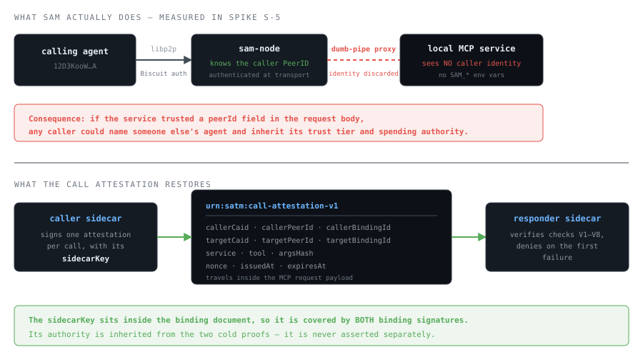

How it works
Two mechanisms, twenty-three checks
Admission is governed by the Agent Mesh Binding and its fifteen checks. Every individual tool call is governed by the Call Attestation and its eight. In both cases the order of the checks is part of the security argument, not an implementation detail.
Mechanism one · admission
The Agent Mesh Binding
An agent operator builds one canonical document, signs it with the node’s libp2p host
key and with the ERC-8004 agentWallet, and submits it to the broker. The
broker runs checks B1 through B15 in order and denies on the first
failure, returning a stable reason code.
| Check | What it establishes | Reason code on failure |
|---|---|---|
| B1 | Freshness, and a bounded lifetime — expiresAt ≤ issuedAt + maxTTL |
expired · ttl_too_long |
| B2 | The document names this mesh and control plane | wrong_mesh |
| B2a | The registry is on the broker’s allow-list — checked before any chain read | registry_not_allowed |
| B3 | The nonce has not been seen (checked here, consumed at B15) | nonce_reused |
| B4 · B5 | The public key derives the claimed PeerID, and the signature verifies | peer_key_mismatch |
| B6 · B7 · B8 | The agent exists on chain, its agentWallet is set, and it matches the document |
agent_wallet_unset |
| B9 | EIP-712 signature from that wallet — EOA or ERC-1271 contract wallet | wallet_signature_invalid |
| B9a | The wallet is not already bound to a different agent | wallet_bound_elsewhere |
| B10–B14 | The on-chain registration file independently names this agent, advertises this peer on this mesh, and is active | sam_endpoint_missing |
| B15 | Atomic commit: consume the nonce, retire any prior binding, insert — in one transaction | nonce_reused |
Three places where the ordering is load-bearing
-
B2a comes before any chain read
If the document’s own
agentRegistrywere trusted, an attacker could deploy an ERC-8004-shaped contract, mint themselvesagentId 42with a wallet they control, and satisfy B6–B9 against their own registry. Every chain call and the EIP-712 domain are therefore derived from the matched allow-list entry, never from the submission. -
B3 checks, B15 consumes
Consuming the nonce before signature verification would let an unauthenticated caller burn arbitrary nonces belonging to someone else. But merely checking without an atomic insert would let two concurrent submissions both pass B3 and both commit. The split resolves both, and a 32-way concurrency test proves exactly one submission wins.
-
B1 enforces an upper bound, not just an expiry
Without
expiresAt ≤ issuedAt + maxTTLa signer could self-issue a decade-long binding that outlives the nonce retention window — after which the document becomes replayable. The configuration validator refuses to start ifnonceRetentionis not greater thanmaxTTL.
Mechanism two · every call
The Call Attestation
A binding says who an agent is. It does not, by itself, tell a responding service who is calling it right now — because of a property of SAM that was measured rather than assumed.

sam-node authenticates the peer with
Biscuit tokens, then forwards the raw stream to a locally spawned service via
HandleStreamPassThrough. The request context carries the caller’s PeerID
but uses it only to select the target service, then discards it. The spawned subprocess
sees no SAM_* environment variables.
Why this is necessary, not defence in depth
If the sidecar simply trusted a peerId field in the request body,
any caller could name someone else’s agent and inherit its trust
tier and spending authority. The attestation is the only mechanism by which an inbound
sidecar learns who called.
| Check | What it prevents |
|---|---|
| V1 | Cross-mesh replay — mesh and control plane must be ours |
| V2 | Replay at a different callee, or after this agent re-bound |
| V3 | Escalating a cheap read-tool attestation into an asset-moving call |
| V4 | Body substitution — argsHash must match the received arguments |
| V5 | Forgery by someone who knows every public field but holds no key |
| V6 | Use of a revoked or superseded binding |
| V7 | Long-lived replay, and self-issued long TTLs |
| V8 | Concurrent replay — the nonce is consumed atomically before forwarding |
Two design points worth understanding
The binding id is a key epoch
The caller’s callerBindingId sits inside the signature and
must be their current binding. Re-binding an agent — which the broker does atomically at
B15 — invalidates every outstanding attestation signed under the old sidecar key. No
revocation list is needed because the check is against liveness, not against a
blocklist.
Consuming a nonce is a side effect
Doing it before signature verification would let an unauthenticated caller burn nonces belonging to a binding it does not control. A test asserts a failed verification consumes nothing, and that the legitimate holder can still use that nonce afterwards.
Why inbound and outbound take different inputs
An earlier draft used one schema requiring an attestation in both directions. That is impossible: the initiator must be authorized before it mints an attestation, so the attestation cannot be an input to its own authorization. The order is authorize → mint → send.
| Outbound | Inbound | |
|---|---|---|
| Question | “May I call this peer?” | “May this caller call me?” |
| Peer identity | peer.peerId, resolved by the broker |
peer.attestation, verified per V1–V8 |
| Attestation | an output | an input |
A small detail that matters
The authorize request type has no self field at all, and
unknown fields are rejected. A caller attempting to declare its own identity fails loudly
rather than being silently ignored. The responder’s identity comes from its own
configuration and binding record.
Mechanism three · staying true over time
Reconciliation
A binding is verified once at admission, but the facts it rests on can change afterwards with no signal at the broker. The agent NFT is sold. The registration file is edited to drop the SAM service entry. The agent is marked inactive. Without reconciliation, a sold agent keeps its access until its Biscuit expires.
The reconciler sweeps active bindings and re-runs the post-admission checks, using the same check implementations as admission. A second implementation would drift, and a reconciler more permissive than the admission path is worse than none — it would report everything healthy while the invariant it protects had already broken.
The distinction that keeps the mesh up
“Could not check” and “checked and failed” are not the same thing. Only a genuine verdict revokes. RPC outages, unreachable registration hosts, and unclassified errors all leave bindings in place and log loudly. Treating an outage as a verdict would let one bad afternoon at a provider revoke the entire mesh — far worse than briefly trusting a stale binding.
Two smaller decisions in the same spirit
- Revoke locally first, then tell the control plane. The store is authoritative, so a control-plane outage must not leave a sold agent trusted by the broker.
- The nonce is never released. A revoked binding’s document is still validly signed, so recycling its nonce would let the agent re-admit itself with the very document that was just revoked.
Going deeper
The full specification is around 111 KB and is the design of record. The sections most worth reading directly:
- §4 — the Agent Mesh Binding, including the document schema and all fifteen checks
- §6.3.3 — Call Attestation, including the eight verifier checks
- §13 — the threat model, twenty-seven threats and their mitigations